السلسلة 1
الشاحنة (صنف C) · 20 سؤال بالصوت. حاول تجاوب بوحدك، من بعد شوف الجواب.
السؤال 1
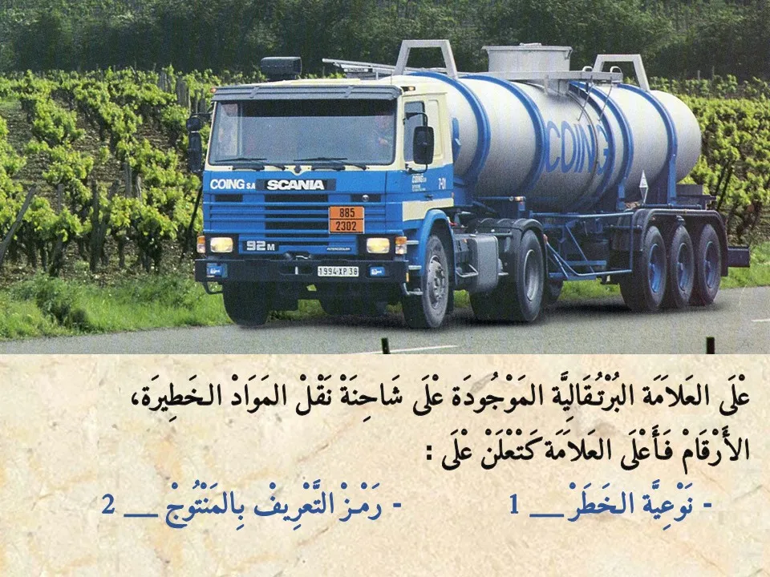
بيّن الجواب
الجواب الصحيح: 1
على العلامة البرتقالية .
- الرمز في الاعلى ديال العلامة كيعلم على نوعية الخطر .
- الرمز في الاسفل كيعلم على رمز التعريف بالمنتوج.
الجواب الصحيح هو 1 .
السؤال 2
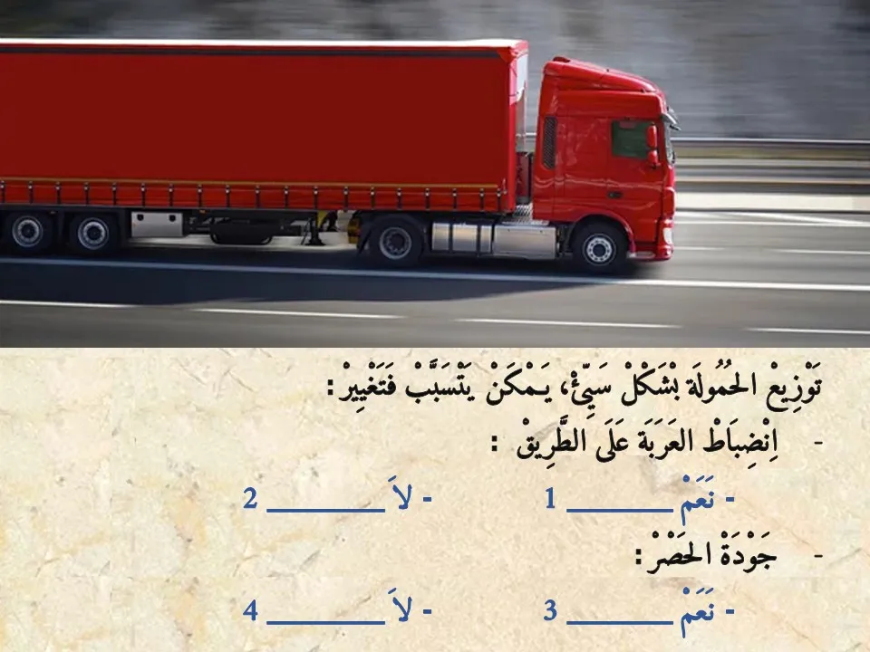
بيّن الجواب
الجواب الصحيح: 1 و 3
التوزيع غير الجيد ديال الحمولة يمكن يأثر على استقرار العربة في الطريق .
يمكن يأثر على:
- انضباط العربة على الطريق .
- جودة الحصر .
السؤال 3
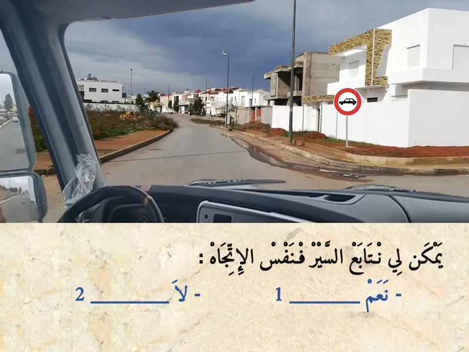
بيّن الجواب
الجواب الصحيح: 2
هذا العلامة ديال المنع. كتعلم بلي ممنوع المرور على جميع المركبات دات محرك باستثناء الدرجات و الدراجات النارية .
ـ و بالتالي ما يمكنش لي نكمل السير للقدام .
السؤال 4
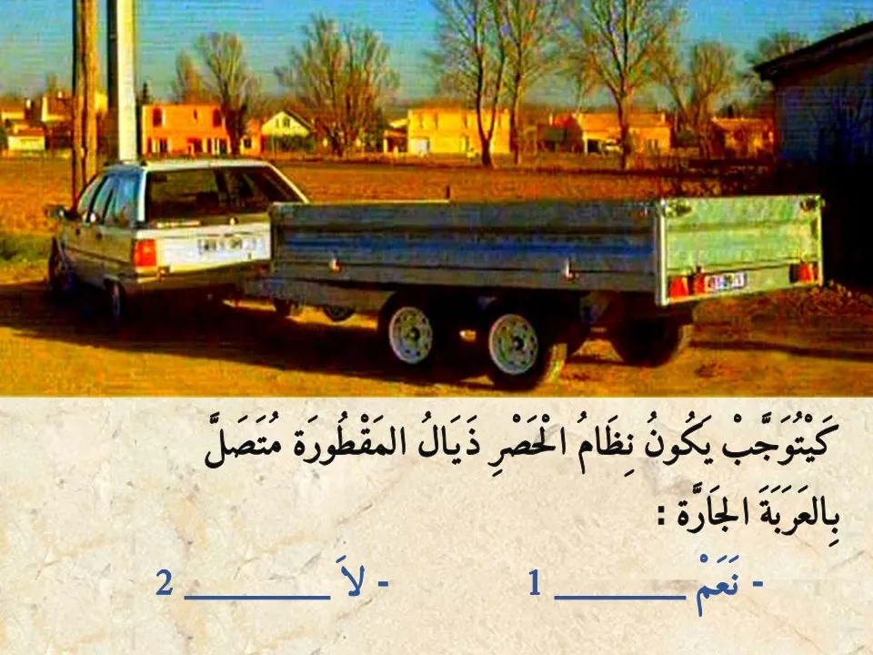
بيّن الجواب
الجواب الصحيح: 1
من الواجب يكون نظام الحصار و ضواء الحصر ديال المقطورة متصل بالعربة الجارة.
السؤال 5
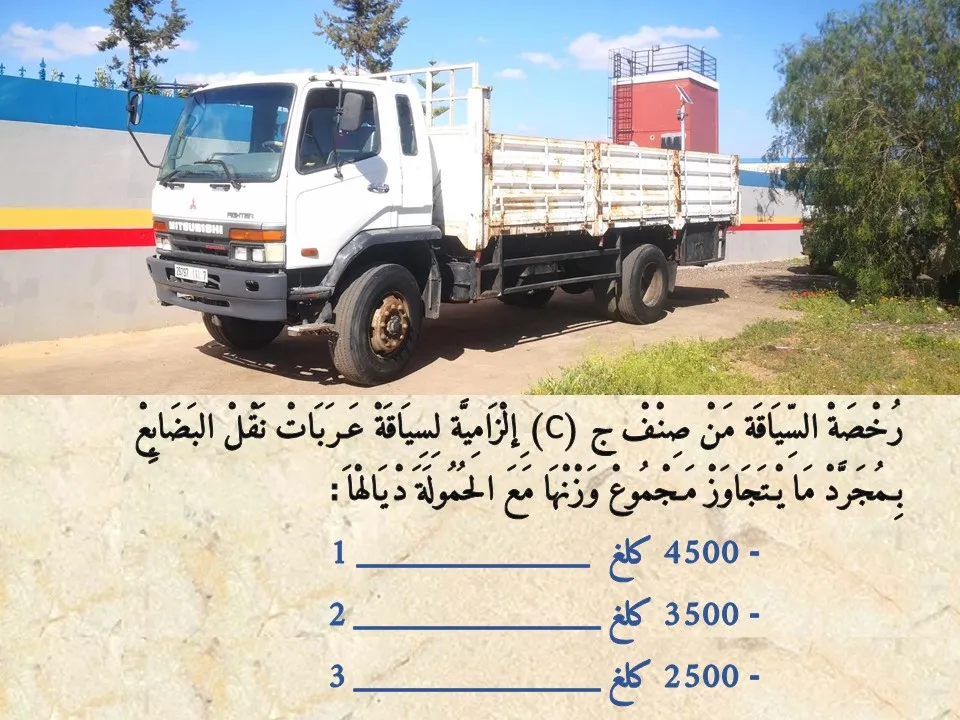
بيّن الجواب
الجواب الصحيح: 2
رخصة السياقة من صنف ج "C" الزامية لسياقة عربات نقل البضائع بمجرد ما يتجاوز مجموع وزنها مع الحموله ديالها ل 3500 كلغ.
السؤال 6
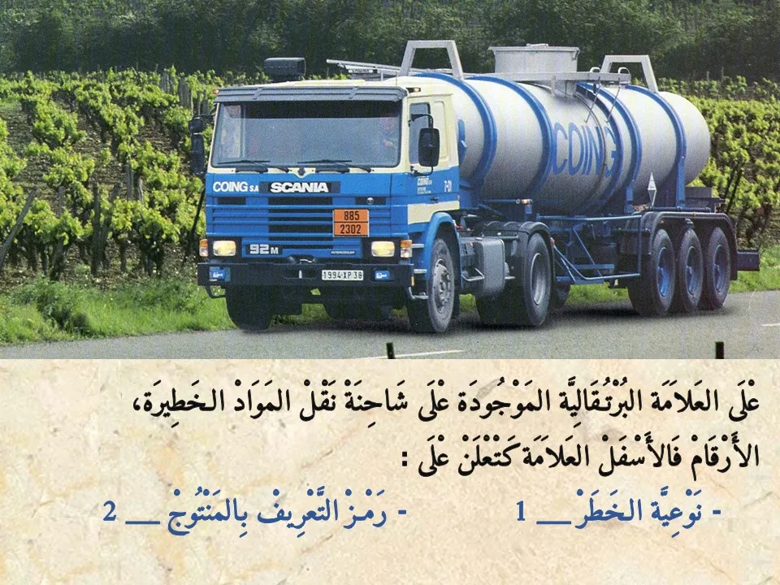
بيّن الجواب
الجواب الصحيح: 2
على العلامة البرتقالية .
- الرمز في الاعلى ديال العلامة كيعلم على نوعية الخطر .
- الرمز في الاسفل كيعلم على رمز التعريف بالمنتوج.
الجواب الصحيح هو 2.
السؤال 7
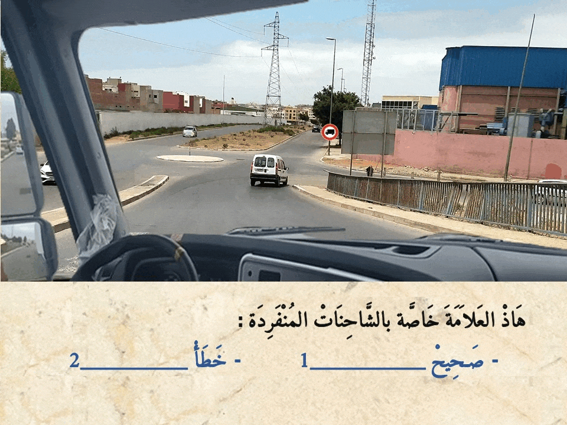
بيّن الجواب
الجواب الصحيح: 2
هذا العلامة ديال المنع .
- كتعلن هاذ العلامة على أن المرور ممنوع على جميع المركبات المخصصة لنقل البضائع. و ليس صنف معين من هذه العربات فقط .
السؤال 8
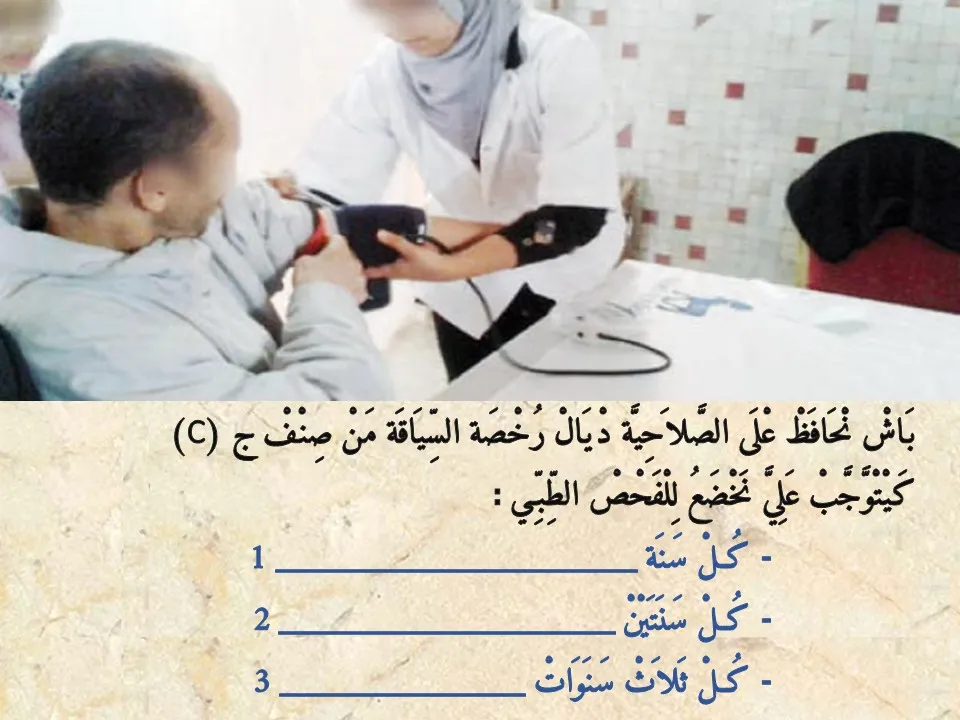
بيّن الجواب
الجواب الصحيح: 2
باش نحافظ على صلاحية رخصة السياقة من صنف ج "C" من الواجب القيام بالفحص الطبي كل سنتين .
السؤال 9
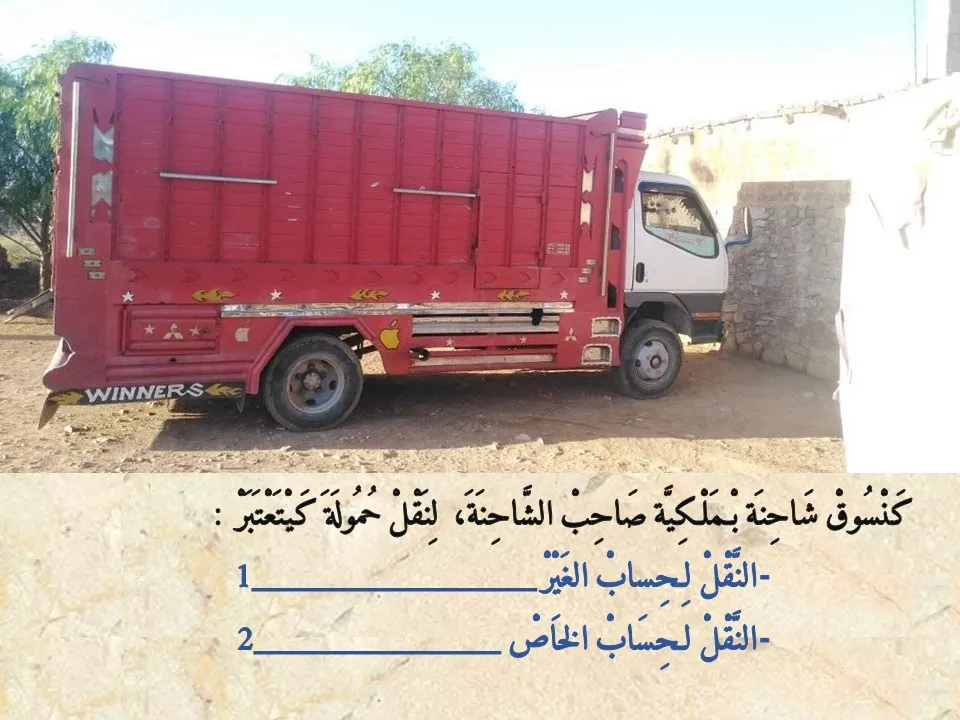
بيّن الجواب
الجواب الصحيح: 2
في هذا الحالة سياقة شاحنة لنقل حمولة لصاحب الشاحنة نفسه ،كيتعتبر النقل لحساب الخاص .
السؤال 10
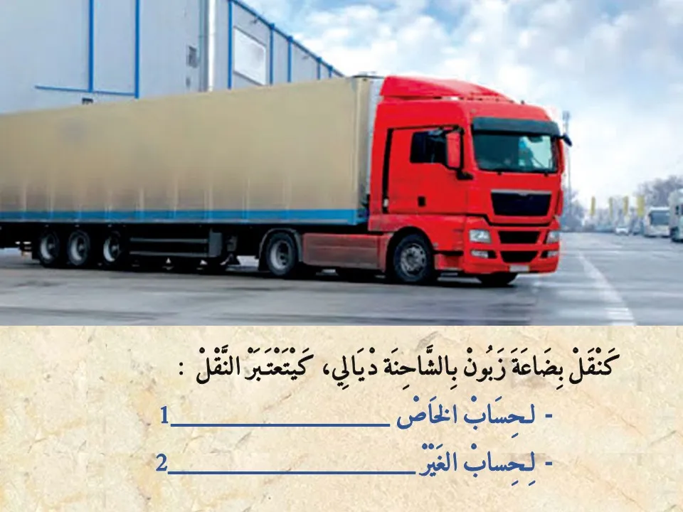
بيّن الجواب
الجواب الصحيح: 2
نقل بضاعة لزبون بالشاحنة ديالي ، كيتعتبر نقل لحساب الغير .
السؤال 11
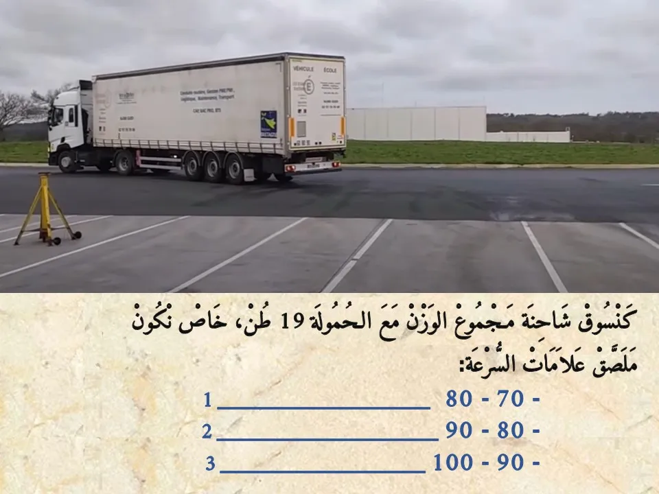
بيّن الجواب
الجواب الصحيح: 2
االا كان مجموع الوزن مع الحمولة ديال الشاحنة ما بين 12 و 19 طن من الواجب عليا نلسق علامات السرعة .
90-80
هذا كيعني ان السرعة ديال في خارج التجمع السكني غادي تكون محدودة في 80 كلم في الساعه.
و في الطريق السيار غادي تكون محدودة ف 90 كلم في الساعه.
السؤال 12
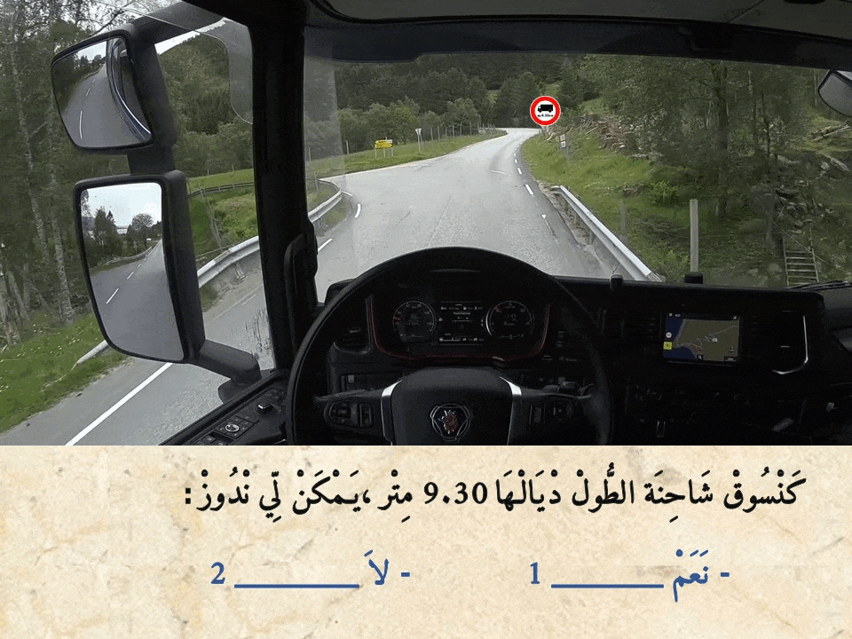
بيّن الجواب
الجواب الصحيح: 1
هذا العلامة ديال المنع. كتعلن بلي المرور ممنوع على العربات لي كيتجاوز العرض ديالهم 9.30 متر .
- في هذا الحالة العرض ديال الشاحنة ديالي هو 9.30 متر، يعني يمكن لي نكمل السير للقدام .
السؤال 13
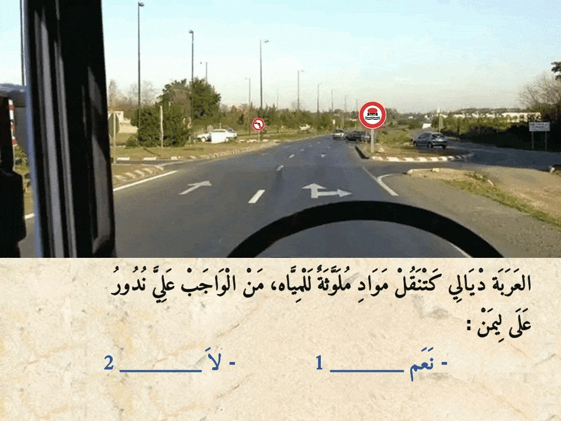
بيّن الجواب
الجواب الصحيح: 1
هذا العلامة ديال المنع كتعلن على أن المرور ممنوع على العربات لي كتنقل مواد ملوثة للمياه .
- في هذا الحالة العربة ديالي كتنقل مواد ملوثة للمياه و بالتالي ممنوع عليا نكمل السير القدام.
و من الواجب عليا ندور على ليمن .
السؤال 14
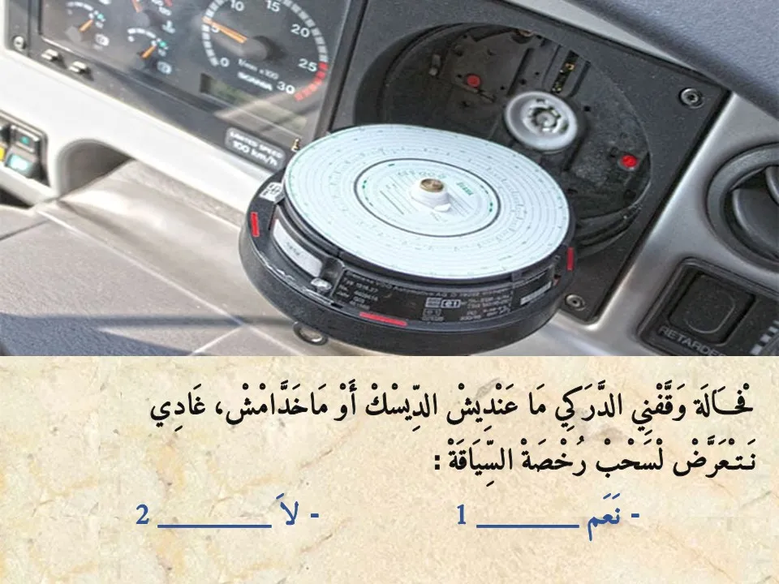
بيّن الجواب
الجواب الصحيح: 2
عند المراقبة و ما عندكش الدسك كيتعتبر جنحة و كتأدي لتوقيف رخصة السياقة.
- فهذا الحالة كتعرض لتوقيف رخصة السياقة لمدة معينة . و ليس سحب رخصة السياقة لي كتكون نهائية .
السؤال 15
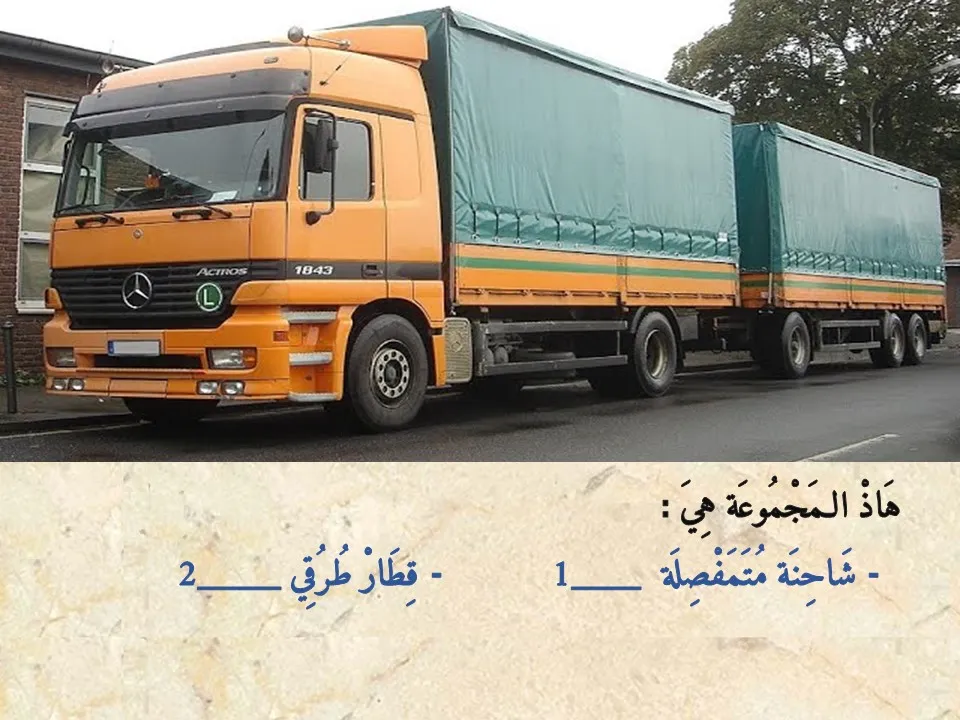
بيّن الجواب
الجواب الصحيح: 2
هذا المجموعة هي مجموعة عربات او رموك جار . كيتعتبر قطار طرقي .
السؤال 16
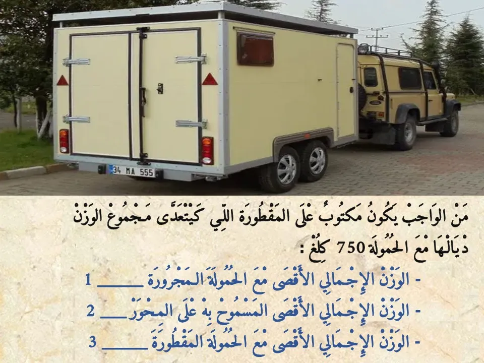
بيّن الجواب
الجواب الصحيح: 3
من الواجب يكون مكتوب على المقطورة لي كيتعدى مجموع وزنها مع الحموله ل 750 كلغ الوزن الاجمالي الاقصى مع الحمولة المقطورة.
- يعني الجواب الصحيح هو 3
السؤال 17
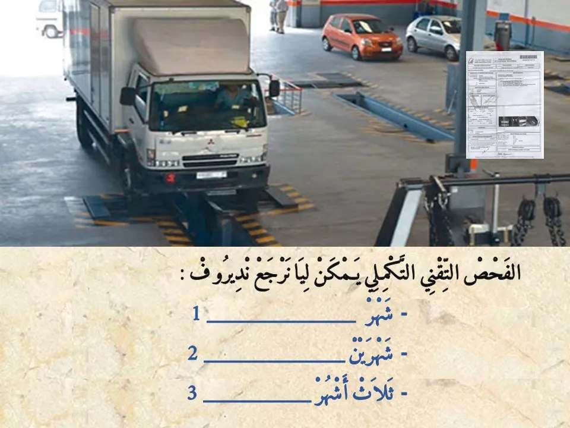
بيّن الجواب
الجواب الصحيح: 1
الفحص التقني التكميلي و هو الفحص الذي ينتهي بشهادة سلبية و تعطى على اثره شهادة مؤقتة للسير مع اجبارية اصلاح الاعطاب المكتشفة.
- الفصح التقني التكميلي من الواجب نديروا فاقرب اجل . لي هو شهر باش نقدر نستمر بالسير بالمركبة ديالي في الطريق .
السؤال 18
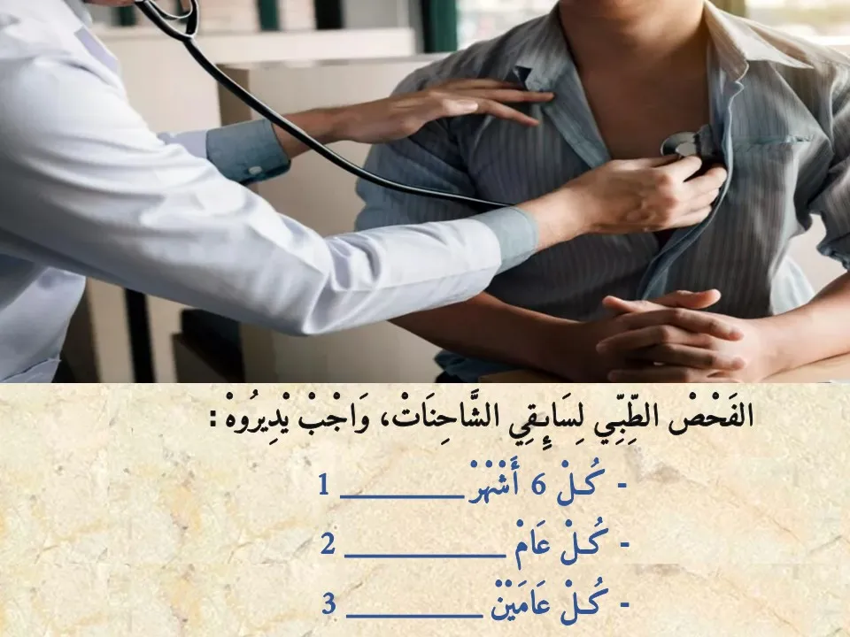
بيّن الجواب
الجواب الصحيح: 3
سنتان : يجب على الأشخاص الحاصلين على رخصة السياقة من الأصناف «ب» (B) و«ﮬ (ب)» ((B) E )و» ج« (C) و «ﮬ (ج)» ((C)E) و «د» (D) و»ﮬ (د)» ((D)E)عند سياقة المركبات المخصصة لنقل البضائع أو للنقل الجماعي للأشخاص. القيام بالفحص الطبي كل سنتين.
السؤال 19
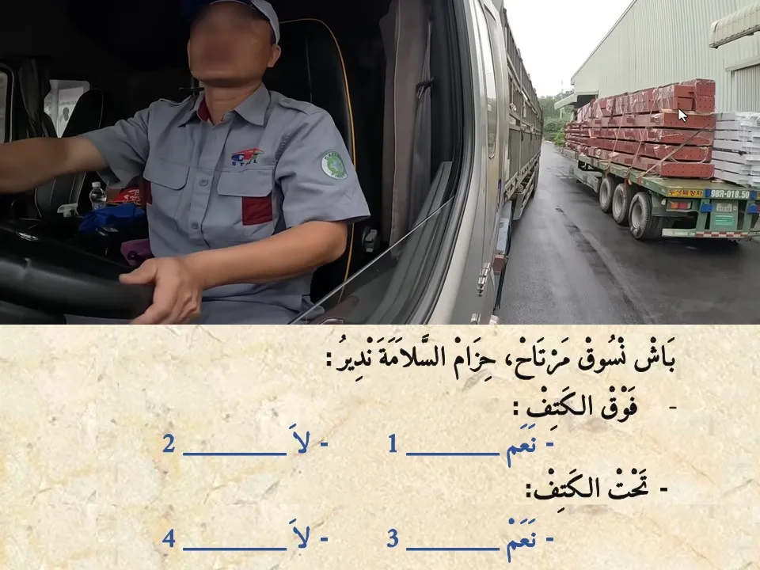
بيّن الجواب
الجواب الصحيح: 1 و 4
حزام السلامه لازم يكون يمر فوق الكتف و فوق الصدر. و فوق الخصر .
السؤال 20

بيّن الجواب
الجواب الصحيح: 2
العمر القانوني اللي خاص باش نجتاز الامتحان من اجل الحصول على رخصة من صنف ج "C" هو 21 سنة .